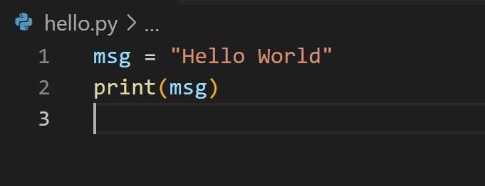
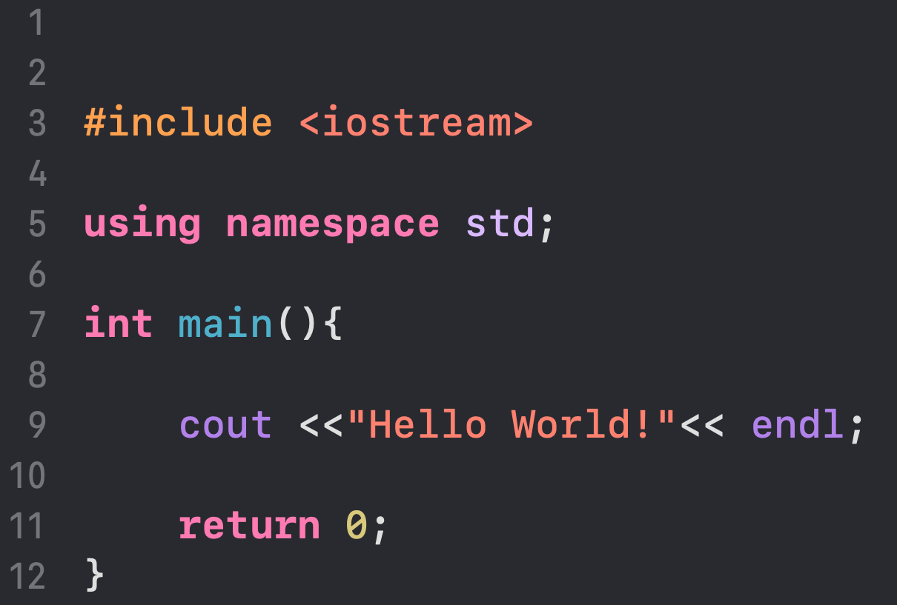

Podrobnejša primerjava C++ in Pythona
Python
- Prednosti:
- preprosta sintaksa,
- ne komplicira s tipi spremenljivk (stringe lahko množiš, seštevaš),
- večino časa deluje z manj kode.
- Slabosti:
- počasen jezik (predvsem za daljše programe/dolge zanke),
- pri bolj kompleksnih programih neveš kako sploh deluje:
- pri podajanju spremenljivk kot parametre (kdaj bo podal kazalec, kdaj vrednost???),
- včasih urejevalnik sploh neprepozna tipa spremenljivke in napiše type:any
C++
- Prednosti:
- Bolj "določen" kot python:
- vedno je samo ena možnost,
- vedno veš kaj se dejasnko zgodi,
- točno določeni opisi napak,
- zelo velika standardna knjižnica.
- Slabosti:
- ponavadi je potrebnih več besed/znakov za določeno kodo,
- veliko se je za naučiti (kako funkcionira jezik)
- pri izdelavi večjih projektov se zelo zakomplicira
- urejanje strukture,
- prevajanje,
- povezovanje binarnih datotek.


Jure Steiner 2024